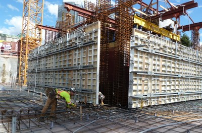
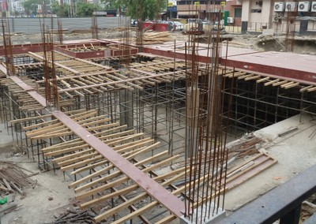

Concreto colado in situ [CIP]
El concreto que ha sido lanzado en el sitio en su ubicación final en la estructura.

Construcción forjada in situ (columnas), California (A. Charleson)

Construcción de viga fundida in situ (note el refuerzo y encofrado), Canada (S. Brzev)

Instalación del refuerzo en una Losa de hormigón armado fundido in situ, (izquierda) y la losa con el apoyo de la entibación después que el concreto se ha fundido ( derecha) , Canadá (S. Brzev)

Construcción de hormigón armado fundido in situ, India (note el encofrado para la construcción de la losa) (S. Brzev)